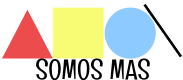

<nav class="navbar navbar-expand-lg navbar-light bg-light fixed-top px-6">
  <a class="navbar-brand">
    
  </a>
  <button class="navbar-toggler" data-target="#my-nav" data-toggle="collapse" aria-controls="my-nav" aria-expanded="false" aria-label="Toggle navigation">
    <span class="navbar-toggler-icon"></span>
  </button>
  <div id="my-nav" class="collapse navbar-collapse">
    <ul class="navbar-nav mr-auto separate">
      <ng-container *ngFor="let path of routes;let i as index">
        <li class="nav-item" ngClass="i === 0 && 'active'">
          <a class="nav-link" [routerLink]="[path.route]">{{ path.text }}</a>
        </li>
      </ng-container>
    </ul>
  </div>
</nav>